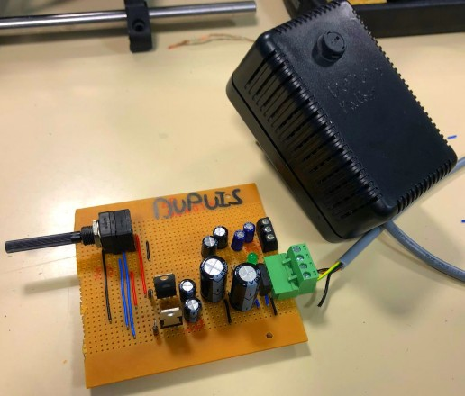
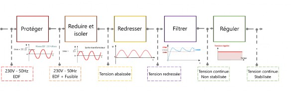
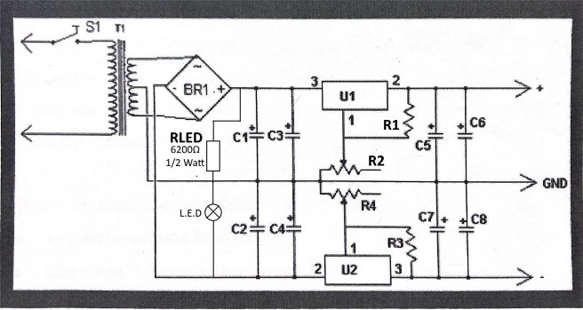
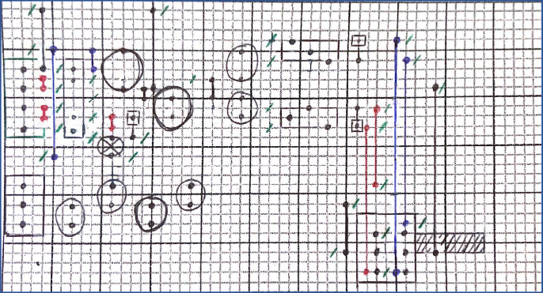
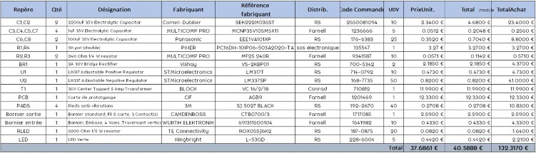
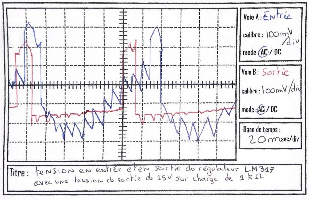
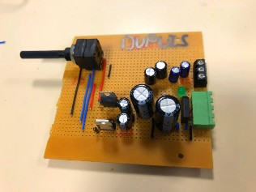
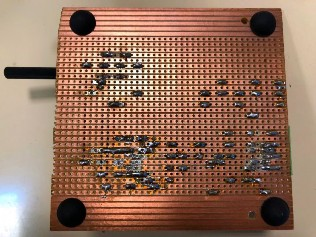
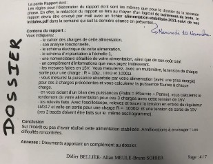

Rapport de l’Alimentation stabilisée

Année 2021-2022
M. Béllier - M. Sohier
Groupe 2 Université D’Orléans
Département Geii IUT de Chartres
Je remercie Monsieur BELLIER et Monsieur SOHIER pour m’avoir accompagné tout au long de ce projet jusqu’à l’aboutissement. Je remercie aussi L’IUT de Chartres qui nous a fourni le matériel ainsi que l’accord pour garder la carte.
L’objectif de cette SAE est de concevoir un prototype à partir d’un cahier des charges. Vous devrez mener ce développement en intégrant une démarche de projet. En plus du prototype, vous devrez fournir les documents nécessaires et communiquer de façons adaptées.
Cahier des charges de l’alimentation stabilisée
On demande de réaliser un prototypage en monôme d’un montage électronique.
Celui-ci devra répondre au cahier des charges suivant :
Energie d’entrée : source secteur 240V 50Hz sur une prise au standard Européen 16A
Sortie attendue : tension continue double (positive et négative) symétrique réglable sur connecteur 3 broches.
La partie soumise à une tension 240V sera protégée en boîtier isolé, et relié au reste du montage par un câble
Le montage se fera par un unique réglage pour les deux sorties symétriques
Ce projet permettra par la suite à alimenter un projet annexe, la partie amplification audio.

Figure 1 - Schéma de l'analyse fonctionnel de l'alimentation stabilisée
L’alimentation transforme les caractéristiques de l'énergie du réseau EDF (230V/50Hz) pour
l’adapter à notre besoin, une alimentation continue de 1,24V à 30V
En premier lieu, on protège et on abaisse la tension, cette fonction est assurée par le transformateur qui a été inséré dans un bloc alimentation en PVC avec fusible pour sécuriser le 230V.
Après, nous devons redresser la tension avec des diodes en utilisant le transformateur à point milieu.
Ensuite, nous devons filtrer la tension avec des condensateurs qui vont créer un effet de charge capacitive cela va augmenter la valeur de la charge moyenne.
Et pour obtenir une tension lisse nous régulons la sortie avec des régulateurs qui permettent de maintenir la tension de sortie constante en régissant de façon à compenser les variations de sa tension d’entrée.
Schéma électrique de l’alimentation stabilisée

Figure 2 - Schéma électrique de l'alimentation stabilisée -
Schéma d’implantation à l’échelle 1

Figure 3- Schéma d'implantation à l'échelle 1
Fiche des composants/Nomenclature

Figure 4 - Tableau de la nomenclature de l'alimentation stabilisée
Le coût total de mon alimentation seule est de à peu près 40,58€
Complément d’informations personnelles
Pour ce projet j’ai essayé de rendre le plus compacte possible la carte, c’est-à-dire prendre le moins de place possible, tout en conservant l’espace règlementaire entre les composants ainsi la place pour insérer des radiateurs passifs pour refroidir les régulateurs.
10 | Ω | 100 | Ω | 1k | Ω | ||||
Tension | 12,31 V | 15,03 V | 15V | ||||||
Intensité | 1.2 A | 150 mA | 14,9 mA | ||||||
Puissance absorbé | 35,26 W | 6,45 W | 2,35 W | ||||||
Puissance charge (Pu) | 14,77 W | 2,25 W | 0,224 W | ||||||
Pabs/Pcharge | 2,39 W | 2,87 W | 10,49 W | ||||||
Rendement | η | 0,42 | 0,35 | 0,1 | |||||
Figure 5 - Tableau des mesure de l'alimentation stabilisée reglée en 15V

Figure 6 - Oscillogramme du relevé de la tension en entrée et en sortie du régulateur LM317 (positif) avec une tension de sortie 15V sur charge de 1kΩ
Maintenant l'alimentation stabilisé réalisée, nous allons pouvoir l'exploiter dans nos futurs projets, comme prochainement en SAE, Le Voltmètre nous allons pouvoir effectuer les divers montages de test mais aussi mesurer notre alimentation. Cela m’a aussi appris à dépanner ma carte et d’apprendre davantage sur le fonctionnement de l’alimentation stabilisée.
Les améliorations envisageables sont l'ajout de radiateurs passif aux régulateurs pour les refroidir ainsi que l'ajout d'une LED en sortie de l'alimentation pour avoir un ordre d’idée de la tension de sortie. Il serait aussi envisageable de rajouter des diodes en sortie de l’alimentation pour éviter les retours de tension, une amélioration qui serait à venir serait d’intégrer notre circuit d’alimentation dans une boite tout comme le bloc du transformateur.
Tout cela avec une meilleure qualité de soudure.
En essayant de rendre la carte le plus compacte possible, j’ai omis la place du potentiomètre qui était assez conséquent et ainsi que la carte plus petite que l’alimentation de l’année précédente ce qui a causé un manque de place en fin de la carte et donc une déportation de la sortie de l’alimentation sur le coter de l’entrée ce qui pourrait déplaire, puisque nous sommes amenés à penser que la sortie et l’entrée d’une alimentation se fait d’un coté à l’autre.
Un autre problème rencontré, est l’inversion des régulateurs positif (LM317) et négatif (LM337), il m’a juste fallu inverser tout simplement les régulateurs entre eux. Cette erreur aurait pu être évitée tout simplement en vérifiant les numéros des régulateurs.
A la fin, ce projet m’a apporté des connaissances sur l’appréhension des métiers de l’électronique.
Site internet :
-https://fr.rs-online.com/web/
Documents fournis :
« Situation d’Apprentissage et d’Evaluation 1.02 Alimentation Stabilisée »
« Documentation des régulateurs positif (LM317) et négatif (LM337) » Les Notes des cours
Infographie
 
